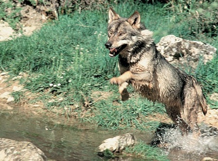
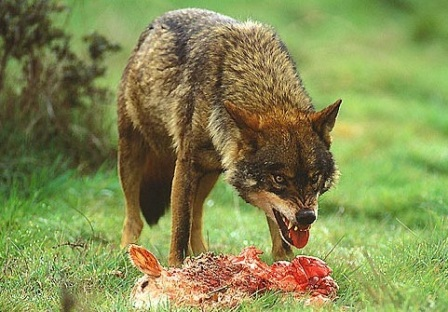

El lobo ibérico en España
España es uno de los últimos refugios de los lobos ibéricos en la Unión Europea. La población del lobo ibérico se está recuperando lentamente de las bajas causadas en los años 1970, aproximadamente quedaron 400-500 individuos, llegando en la actualidad(2003) a 2000-3000, casi el 30% de los lobos Europeos. Existen varias razones para aumentar la población de estos lobos.

Razones para el aumento de la población de lobos ibéricos en España
Hasta principios del año 1970 el lobo iberico era “oficialmente” considerado una plaga en España, y el gobierno pagaba recompensas por ver a estos animales muertos. En ese momento, muchas personas vieron al lobo como marca de un país del Tercer Mundo, en contraste con naciones «civilizadas» como Francia y Gran Bretaña que habían erradicado con éxito esta plaga. En el pasado, la persecución se había extendido, y existía una ley aprobada por el Príncipe de Asturias que en detalles planteaba que entre marzo y diciembre del año 1816, se pagaría 160 reales de recompensas a la persona que matara un lobo adulto y 32 reales por un cachorro. El historiador Juan Pablo Torrente llegó a la conclusión de que la caza de animales salvajes, incluyendo lobos, osos y zorros representaba, “en términos absolutos y relativos, una importante fuente de riqueza” para las poblaciones locales. El lobero o cazador de lobos era una figura respetada en el condado hasta hace relativamente poco, y toda una serie de ingeniosas trampas se desarrollaron a través de los siglos para atrapar a los lobos. Todas estas trampas son ilegales ahora, sin embargo, todavía es legal cazar lobos en la mayor parte de España. En la mayor parte de su área de distribución, la especie debe respetada siempre y cuando no entre en conflicto con los intereses humanos, y mientras que la caza no constituya una amenaza para el lobo ibérico.
En España, al norte del río Duero, en el municipio de Muelas de los Caballeros, al norte de Zamora, es donde existen las poblaciones más densas de lobos ibéricos, aquí no se ha mostrado ningún interés real por su conservación. Sin embargo, la protección es mucho más fuerte al sur de Duero donde las poblaciones de lobos ibéricos son mucho más frágiles.
En segundo lugar, en los últimos 40 años ha existido una gran migración de las personas del campo a las ciudades, y esta ausencia ha llevado a la regeneración de la vegetación natural en las antiguas zonas agrícolas y el enorme aumento de las especies que les sirven de presas a los lobos ibéricos, dentro de estas podemos mencionar, el corzo y el jabalí. Cuando se va en coche o se toma un tren, se podrá apreciar la inmensidad, el vacío del paisaje, y la rica y variada fauna.
En tercer lugar, las actitudes han cambiado. Aunque todavía existen muchos recelos, entre algunas poblaciones rurales. Ahora en España vemos al lobo ibérico como un animal digno de protección. El gran español y populista de la naturaleza, Félix Rodríguez de la Fuente, jugó un importante papel en esta conversión. Millones de hogares en España en la década de los setenta fueron cautivados por su serie de televisión, ‘El Hombre y la Tierra’, de la que un lobo fue la estrella del espectáculo. Rodríguez utilizó los lobos y los cachorros que vivían en una finca vallada en la creación de esta serie. Pero, a pesar de su engaño, en este episodio el lobo se destaca como una pieza magnífica y hermosa en la naturaleza.
Distribución, hábitat y dieta de los lobos ibéricos en España
El lobo ibérico es considerado por algunos especialistas como una sub-especie (Canis lupus signatus) del Canis lupus, aunque esto sigue siendo rechazado por muchos. Se dice que este animal se distingue por las marcas negras a lo largo de su cola, en la espalda, y en las patas delanteras. Más del 50% de estos animales se encuentran en el norte de Castilla y León (aproximadamente 1000-1.500 lobos ibéricos), y menos del 35% en Galicia (aproximadamente de 500-700 lobos ibéricos), y la mayor densidad de población se encuentra en el noreste de Zamora (5-7 lobos/100km2). Una vez los lobos estuvieron presentes en toda la península ibérica, pero ahora están exiliados al Nordeste (Asturias, León, Norte de Castilla, Galicia), y algunas poblaciones están en la Sierra Morena (Jaén y Cuenca). Sin embargo recientemente, se las han arreglado para cruzar de nuevo la barrera, lo que hoy en día es el río Duero y han comenzado a extenderse hacia el sur y hacia el este: se han detectado dos grupos cerca de Guadalajara y han comenzado a moverse en Teruel, en el sur de Aragón.
Los lobos españoles tienen unas 300 parejas reproductoras, y dan un total aproximado de 1.500 cachorros en el inicio de la primavera y unos 2.000 a mediados del otoño.
En general el lobo ibérico en España ya no se considera en peligro de extinción, los más vulnerables son los que están en la Sierra Morena que si están en peligro de extinción, estos lobos habitan en fincas privadas de caza, donde son ilegalmente perseguidos, ya que entran en conflictos con las prácticas de caza de los millonarios.
El hábitat ideal para los lobos ibéricos en España necesita una baja densidad de población humana (menos de 10 habitantes por km2), y una alta densidad de especies y presas como el corzo y el jabalí, estos animales tienen gran capacidad de adaptación a diferentes entornos, pero el factor más importante es la tolerancia de la población humana nativa de la especie en un área determinada. La dieta del lobo Español depende de la zona en donde este resida. Mientras que los lobos de Galicia, se alimentan de los restos de granjas, como por ejemplo de pollos y cerdos, los lobos cántabros toman ciervos, corzos y jabalíes, y casi el 50% de la dieta de los lobos en el cinturón de cereales castellano son los conejos, sin embargo, su mayor fuente de nutrición es la ganadería.
Conflicto del lobo ibérico con el ganado y los seres humanos
Se calcula que hasta 1988, los lobos ibéricos han matado unos 1.200 caballos y burros, y unas 450 vacas y ovejas, lo que representa una pérdida total de 720.000 euros. Las cifras son, sin duda mayores ahora, pero en todo el rango del lobo (100.000 km2) estas pérdidas son pequeñas en comparación con otras causas naturales que periódicamente afectan a los agricultores y ganaderos (enfermedad, las inclemencias del tiempo), pero estos pueden representar un problema serio para los ganaderos en determinadas zonas. El 77% de las muertes del ganado se producen en zonas montañosas, donde las prácticas agrícolas son frecuentes. De hecho, sólo el 15% de los 2.000 lobos españoles, y los lobos de Cantabria causan el 70% de los daños a la ganadería. Se debe tener claro, que no es que los lobos de Cantábrico sean agresivos, si no es que encuentran en el ganado una presa fácil. Por desgracia, los lobos, son animales carnívoros, por lo que con frecuencia se entusiasman por la sangre y por las masacres que hacen en los rebaños. Un estudio en Burgos, muestra un promedio de 7,6 ovejas muertas por cada lobo.
Otro gran naturalista español, Miguel Delibes, una vez dijo, “el lobo es su propio peor enemigo”. En cualquier caso, los daños causados por los lobos son muy exagerados. En la Sierra de la Culebra, están las mayores densidades de lobos de la Unión, y el 80% de los ataques en los rebaños son solo con ovejas. Los ataques al ganado son más frecuentes en las zonas donde los animales no están protegidos. La renovada presencia estable de los lobos en la Cordillera Cantábrica ofrece un mejor control natural sobre el jabalí, ya que estos animales se están expandiendo por toda España y cada vez son más numerosos en casi todos los ecosistemas. Este control sobre la población de jabalíes puede ser una buena noticia para el increíblemente peligro de extinción del urogallo, cuya población cantábrica ha caído en picada en los últimos años.
Conservación del lobo ibérico en España
La conservación del lobo no es tarea fácil, ya que hay que basarse en posturas y creencias altamente contradictorias, a partir de la idealización por parte de la población urbana y al derecho de la población rural.
El exceso de amabilidad por los lobos de algunos ecologistas urbanitas no ayuda a la población rural a enamorarse de los lobos, y frecuentemente las opiniones de los agricultores se basan en la codicia, en la ignorancia, e incluso el odio, como se evidencia semana tras semana en los artículos de la prensa local en las áreas donde viven los lobos españoles, aquí los agricultores a menudo se sugestionan pues se inflan muchos de los daños causados por los lobos.
Tradiciones y leyendas sobre los lobos en España
Como en todas partes, las supersticiones sobre los lobos en España también abundan. Se dice que existen alrededor de 70 expresiones tradicionales (amigo, el otro, tío Juan) que el hablante puede decir para evitar la palabra lobo, ya que la criatura puede ser invocada en la mera enunciación de la palabra.
Los primeros registros humanos acerca del lobo en la Península Ibérica se encuentran en pinturas rupestres como las de Los Arcos (Jaén) y Tajo de las Figuras (Cádiz). Más tarde, el lobo fue un motivo común en los antiguos jarrones ibéricos, en urnas y en platos, por lo general estos animales reflejan un carácter infernal, reflejando el estilo de una bestia.
En la pre-romana España, el lobo se asoció con el más allá, esto sin duda viene de la costumbre que tienen el lobos de alimentarse de seres humanos muertos como carroña. Sin embargo, el miedo y el verdadero odio al lobo parece venir de la Edad Media, cuando existía un temor generalizado de los supuestos poderes ocultos de la naturaleza. Es en este momento cuando criaturas fantásticas como hombres lobos comienzan a aparecer en muchas leyendas sobre todo en el oeste de la Península. Los hombres-lobos, conocidos como lobishomes en Galicia, y a menudo se asocian con la maldición de un padre. Una de las historias adaptadas y traducidos de “Leyendas españolas de Todos Los Tiempos” de José María Merino (. Temas de Hoy 2000) dice algo como esto:
Hace muchos años, hubo una chica de León que paseaba por las colinas de Caurel, en la zona fronteriza con El Bierzo. Ella había sido maldecida por su padre que se había vuelto loco. La niña, al parecer, amaba la carne. Un día la niña se comió parte de la comida de su padre, él se molestó, perdió la paciencia y le dijo a la niña que se fuera a vivir con los lobos para las montañas, y aquí la niña pudo comer bastante carne de lobos.
El hechizo se apoderó de ella, y esa misma noche la chica se dirigió a las colinas. Después de rodar algún tiempo por el suelo del bosque, la niña se convirtió en una loba. A veces, tenia forma de loba y otras forma de mujer, poco a poco se abrió camino a Galicia, y con su forma de lobo se convirtió en líder de una manada de lobos, donde causaron varios daños a los animales y a las personas, se dice que cuando la niña estaba en su forma humana construía fogatas y evitaba que sus lobos le hicieran daño a nadie.
Después de muchos años, un molinero rompió el hechizo sin querer. La mujer lobo solía colarse en su fábrica para comer harina, sin embargo una noche, el molinero estaba durmiendo y fue despertado por un sonido de forcejeos, era la loba tratando de entrar en la puerta. El molinero agarró su cuchillo y se lo clavó en una de sus patas, hubo un grito terrible e inmediatamente se hizo más suave, y luego la piel de la loba cayó lejos de un cuerpo que revelaba a una bella mujer.
En un primer momento, la chica no sabía dónde estaba. Todos los aldeanos estaban fascinados por su historia y querían saber de dónde era. La chica volvió a su tierra y en su casa fue recibida con mucha alegría. Cuando llegaron las cosechas, los campesinos viajaban a este lugar a conocer la niña que había sido loba y que ahora era una bella mujer. Después de conversar con los campesinos, comenzó a recordar el lugar donde se libró del hechizo que le echó su padre, y también recordó momentos difíciles que pasó en la selva.
Lobos híbridos
Otras de las tradiciones sobre los lobos en España son la existencia del lobo híbrido o medio-lobo, sobre todo en la tradición del folclore asturiano. Aquí los lobos domesticados (conocidos como lobos de jaulas – lobos enjaulados) se liberan en los cerros para dar rienda suelta a estragos. Recientemente han llegado noticias en Asturias donde el gobierno, y los ganaderos han advertido de la presencia de tales cruces. Un comportamiento inusual se ha detectado entre algunos tipos de lobos, que en lugar de huir al ver a los seres humanos, permanecen mirándolos. También se informó que atacan a las ovejas y las vacas en plena luz del día. Muchos agricultores están culpando a estos lobos de los aumentos de los ataques sobre el ganado en algunas zonas. Algunos expertos afirman que los lobos híbridos han heredado la ferocidad del lobo y la falta de miedo a los humanos de los perros. La teoría dice que un híbrido podría haber surgido a través de la unión de un lobo macho con una perra hembra, ya que de otra forma sería imposible. Como dijo un experto, “la loba se comería al perro de desayuno”.